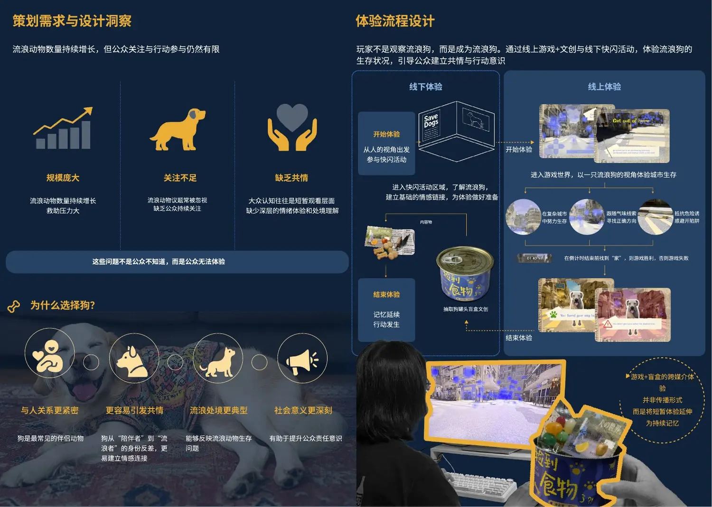
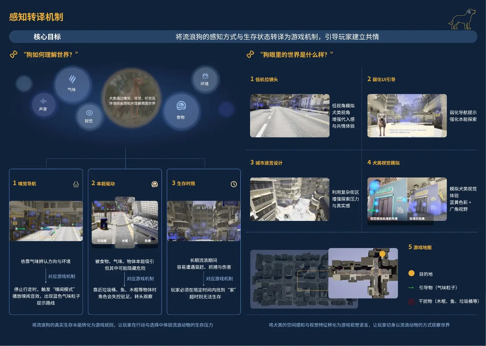
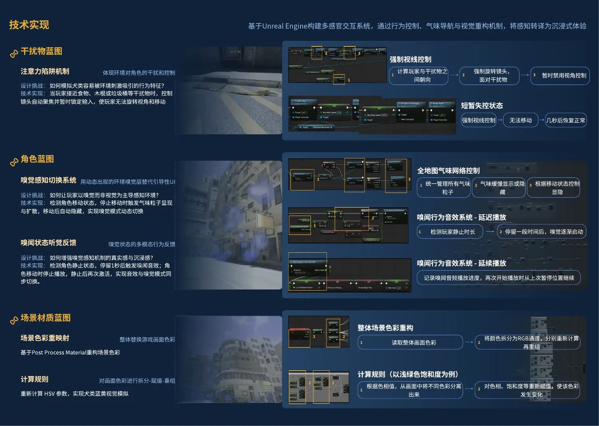
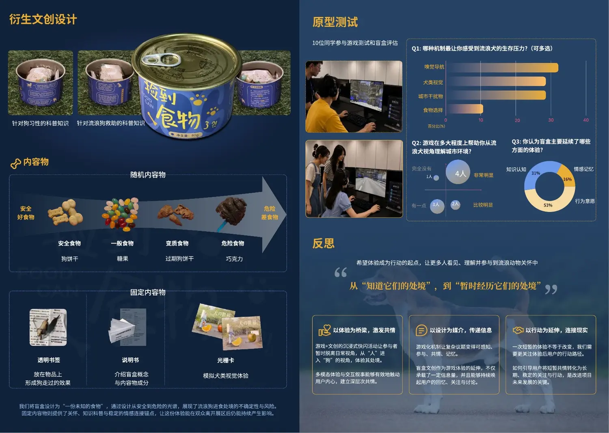

03 · Animal Perception × Transmedia
你是狗
将流浪犬的感知方式与城市生存处境转译为游戏机制，让参与者从“观看流浪动物”转向“以流浪犬身份经历城市”。
01 · Strategy
把公益信息从认知推进到共情与行动
项目不再让观众站在人类视角旁观，而是通过视觉、听觉、气味线索和生存资源，把犬类感知与选择压力变成玩家必须应对的规则。

02 · Experience
以动物感知重新阅读熟悉的城市
Unreal Engine 游戏承担第一人称生存体验，实体罐头盲盒和科普内容把线上情绪带回现实，使玩家的选择进一步连接到真实议题。


03 · Validation
线上体验与线下传播形成完整链路
项目通过原型测试观察理解、情绪和行动意愿的变化，并以食物、身份与领养信息构成的盲盒衍生体验延长议题传播。

下一项目 · 共创